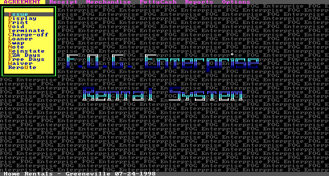

Nine systems, built and maintained across eighteen years (1988 to 2006) and run in production by real companies. Preserved, anonymized, and running in your browser.
His software, running live over synthetic data, dropped straight at its main menu. Start with FOG, the rent-to-own home-furnishings system: it runs its own general ledger, payables, payroll, and statements alongside the rent-to-own business, so it is the whole accounting engine and a full vertical application at once. Run the rent-to-own side or the accounting side.

The rest of the collection boots right here too:
Software this comprehensive ran on mainframes and minicomputers. A single system covering general ledger, receivables, payables, inventory, and payroll implied a hardware budget in the tens or hundreds of thousands of dollars and a team to install and maintain it. Writing that capability in BASIC, for a PC, sat outside what the industry treated as feasible.
Each system reached past bookkeeping into the specifics of its business. The one written for a food manufacturer carried recipe and formula management with job costing, tracing raw materials through production runs and assigning cost to each batch. The rent-to-own home-furnishings system modeled rental-purchase agreements, depreciation, and serial-numbered inventory that moved between stores. The dental-lab system billed against a catalog of procedures. A poultry wholesaler's receivables and a payroll bureau's quarterly filings were handled the same way: a domain model built for the work, sitting on one shared, integrated general ledger.
| System | Cost | Team | Support model |
|---|---|---|---|
| SAP R/2 (mainframe) | $500K – $2M+ | 20–50 people | Consulting firm |
| Peachtree (PC, market leader) | $2,000 – $5,000 | Self-install | Phone |
| Accpac (PC, per module) | $495 – $5,000 | Reseller channel | Phone |
| QuickBooks (PC, from 1992) | $99 | — | Not an ERP |
| MCS | < $50K, all-in | 1 person | He answered the phone |
The modules SAP R/3 would ship in 1992 (GL, AR, AP, inventory, payroll) were already running here on a microcomputer, custom-fit to each business.
What he shipped, against what the industry shipped.
Food manufacturing, with GL, AP, AR, financial statements, payroll, inventory, order entry, and time sheets, plus job costing and recipe management. Written in QuickBASIC 4.5.
Full accounting for a Knoxville poultry business — "Produce Company" in the old egg-and-poultry sense, not fruit and vegetables: preserved masters with 410 populated customer records and 51 populated employee records, and the most mature receivables he ever wrote, split across six dedicated sub-modules. It ran daily until 2001.
The 2,000-line payroll engine is extracted and shipped as a standalone product — the same codebase configured for one bookkeeping and payroll client after another, each with its own menu and setup. He also runs it as a payroll service bureau, processing other companies' payrolls himself, pay period after pay period, for years.
Microsoft releases Visual Basic for MS-DOS in September, and later projects migrate to it, the same compiler family he had bet on four years earlier.
A rent-to-own home-furnishings system with multi-store support, rental-purchase agreements, depreciation, and 3,479 populated customer records, then a dental-lab billing system for Rogers' Dental Laboratory of Athens, Tennessee, with a 120-record procedure catalog and 11,638 invoice records. The rent-to-own system carries his whole accounting engine inside it; its books are a family store in Greeneville, Tennessee, supported remotely by modem over the years.
The software keeps working long after DOS itself is history, with accounting modules recompiled as late as 2005 and rent-to-own books posting entries into 2006. From the first line in 1988, the surviving evidence spans eighteen years. The files alone do not prove uninterrupted production use throughout that span.
Historical source and executables are preserved alongside derived demo data and portability fixes. Structured identity fields in the browser bundles are scrubbed and audited; unresolved formats and real-data backups remain outside those bundles.
These are not thin front-ends over a database. Where a commercial developer would reach for a toolkit or a team, one person built the layers underneath, and did it well enough that the systems ran for years.
One codebase behind many systems. The payroll module, roughly 2,000 lines handling employees, checks, federal tax withholding, and W-2s, runs nearly unchanged inside six of the nine systems. The accounting core was reused the same way. He wrote the hard part once and carried it forward for eighteen years.
Receivables broken into six programs. In MPC, the poultry wholesaler's system, accounts receivable is not one module but six specialized programs for entry, sales, detail, history, reporting, and setup. Commercial packages shipped AR as a single module; he saw six distinct workflows and built each.
Its own indexed database, in application code. Records are fixed-length binary structures in indexed files, with separate name and key indexes and record locking for shared access. It held over 11,000 invoices and thousands of customers per system with no database product underneath, just his code managing the indexes.
Its own login. The rent-to-own system authenticates by transforming each typed character, binary-searching a sorted password file for the result, and checking a per-user permission level before every sensitive action. Small, homemade, and real.
Screens painted straight to video memory. Precompiled screen layouts are loaded directly into the display's memory rather than drawn field by field, so a full form appears at once. On a 1990 PC it made a text interface feel instant.
flowchart TD
PR["One payroll engine
~2,000 lines · employees · checks
FIT · FICA · Medicare · W-2s"]:::hub
PR --> MPC["MPC
poultry wholesaler"]:::sys
PR --> PFC["PFC
food manufacturer"]:::sys
PR --> FOG["FOG
rent-to-own"]:::sys
PR --> BUR["payroll bureau
client installs,
configured per company"]:::sys
classDef hub fill:#241a0e,stroke:#ffb000,color:#ffe8bf;
classDef sys fill:#16261c,stroke:#1d9e44,color:#d6e6da;
The same payroll code runs in system after system. The accounting core was reused the same way, carried out of the poultry company's books (MPC) and embedded whole inside the rent-to-own system (FOG), which is why FOG is the largest and most complete of the nine.
Running the software is one thing; the code is the other. All ~46,000 lines of BASIC are on GitHub to read, unmodified except for documented portability fixes. A few worth opening:
PR.BAS): the ~2,000-line engine that runs, nearly unchanged, in six systems.ARP/ARS/ARD/ART/ARR/ARI.BAS): accounts receivable split into six programs.RTO.BAS): the character-transform password check and per-user permission levels.